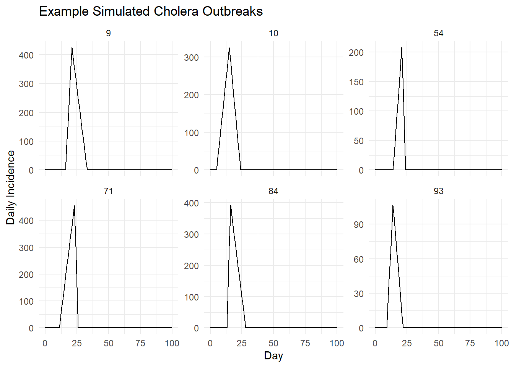
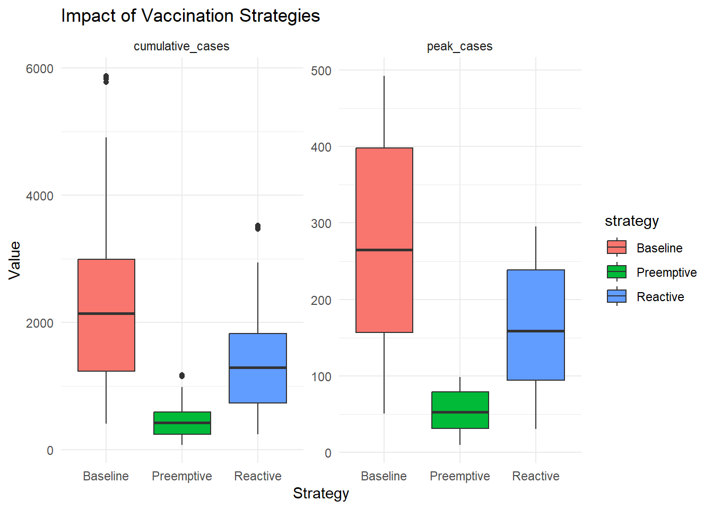

Code
# Cholera Outbreak Simulation Using Piecewise Linear Curves (Inspired by Middleton et al.)
library(tidyverse)
library(ggplot2)
# --- Parameters ---
n_sim <- 100 # number of outbreaks
days <- 0:100 # time horizon (days)
preemptive_reduction <- 0.8 # percent reduction in peak and total for preemptive vaccine
reactive_reduction <- 0.4 # percent reduction in post-day-7 values for reactive vaccine
reactive_delay <- 7
# Function to generate piecewise linear outbreak
simulate_outbreak <- function(start_day, peak_day, end_day, peak_height) {
tibble(
day = days,
incidence = case_when(
day < start_day ~ 0,
day >= start_day & day < peak_day ~ (day - start_day) / (peak_day - start_day) * peak_height,
day >= peak_day & day <= end_day ~ (end_day - day) / (end_day - peak_day) * peak_height,
TRUE ~ 0
)
)
}
# Function to apply preemptive vaccination
apply_preemptive <- function(incidence, reduction) {
incidence * (1 - reduction)
}
# Function to apply reactive vaccination
apply_reactive <- function(df, reduction, delay) {
df %>% mutate(
incidence = ifelse(day > delay, incidence * (1 - reduction), incidence)
)
}
# --- Simulate all outbreaks ---
set.seed(42)
outbreaks <- vector("list", n_sim)
for (i in 1:n_sim) {
start_day <- sample(5:20, 1)
duration <- sample(10:25, 1)
peak_offset <- sample(3:(duration - 3), 1)
peak_day <- start_day + peak_offset
end_day <- start_day + duration
peak_height <- runif(1, 50, 500)
df <- simulate_outbreak(start_day, peak_day, end_day, peak_height)
df <- df %>% mutate(sim_id = i)
outbreaks[[i]] <- df
}
all_outbreaks <- bind_rows(outbreaks)
# Apply strategies
preemptive <- all_outbreaks %>% group_by(sim_id) %>% mutate(incidence = apply_preemptive(incidence, preemptive_reduction))
reactive <- all_outbreaks %>% group_by(sim_id) %>% group_modify(~ apply_reactive(.x, reactive_reduction, reactive_delay))
# --- Summarize ---
summarize_scenarios <- function(df) {
df %>%
group_by(sim_id) %>%
summarise(
cumulative_cases = sum(incidence),
peak_cases = max(incidence)
)
}
baseline_summary <- summarize_scenarios(all_outbreaks)
preemptive_summary <- summarize_scenarios(preemptive)
reactive_summary <- summarize_scenarios(reactive)
# Combine for comparison
comparison <- bind_rows(
baseline_summary %>% mutate(strategy = "Baseline"),
preemptive_summary %>% mutate(strategy = "Preemptive"),
reactive_summary %>% mutate(strategy = "Reactive")
)
# --- Visualization ---
# Plot a few example outbreaks
example_ids <- sample(1:n_sim, 6)
example_data <- all_outbreaks %>% filter(sim_id %in% example_ids)
example_plot <- example_data %>%
ggplot(aes(x = day, y = incidence)) +
geom_line() +
facet_wrap(~ sim_id, scales = "free_y") +
theme_minimal() +
labs(title = "Example Simulated Cholera Outbreaks",
x = "Day", y = "Daily Incidence")
# Boxplots of cumulative cases and peak by strategy
boxplot_plot <- comparison %>%
pivot_longer(cols = c(cumulative_cases, peak_cases), names_to = "metric", values_to = "value") %>%
ggplot(aes(x = strategy, y = value, fill = strategy)) +
geom_boxplot() +
facet_wrap(~ metric, scales = "free_y") +
theme_minimal() +
labs(title = "Impact of Vaccination Strategies", y = "Value", x = "Strategy")
# Display plots
print(example_plot)
Code
print(boxplot_plot)